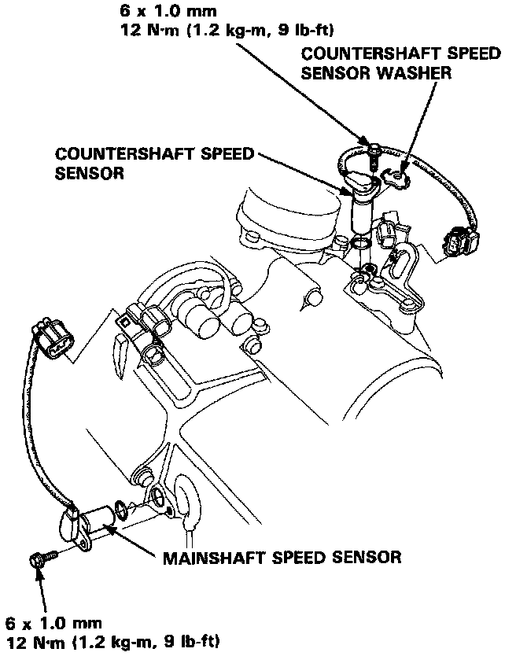

Transmission Speed Sensor: Service and Repair

MAINSHAFT/COUNTERSHAFT SPEED SENSORS
1. Remove the 6 mm bolt from the transmission housing and remove the mainshaft and countershaft speed sensors.
2. Replace the O-ring with a new one before reassembling the mainshaft and countershaft speed sensors.
3. Install the washer on the countershaft speed sensor.
NOTE: Do not install the washer on the mainshaft speed sensor.
4. Install the speed sensor(s) in the transmission housing.